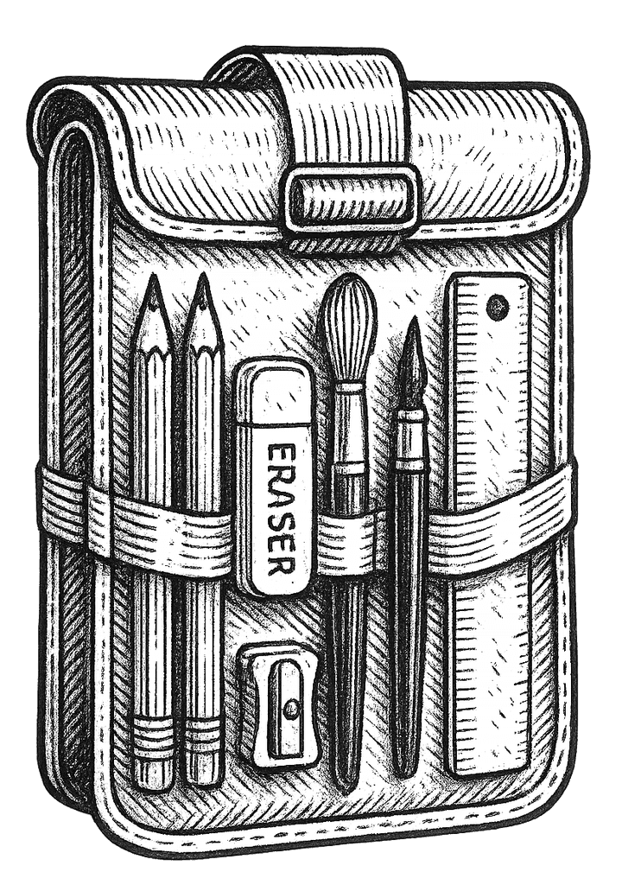

First Principles
Does the student understand why the exercise matters?

Your free lesson is ready
This sample works best when the student worksheet and support guide stay side by side. The student draws on one page while the parent uses the other page for examples and prompts.
What to look for
The goal is not a perfect drawing. The goal is to see whether the lesson is understandable, screen-free, low-prep, and useful enough to repeat.
Does the student understand why the exercise matters?
Can the lesson happen without a device nearby?
Do the pages tell you what to do next?
Did setup stay simple enough to repeat?
Can the pages be used, marked up, and reprinted?
After the sample
The free lesson should help you decide whether Torch & Trowel fits your student, your schedule, and the way you want art to work at home.
Print it, sit nearby, and watch whether the page structure helps your student stay focused without a screen.
See how to use it ->If the rhythm works, review how the same worksheet-and-guide pattern expands into a complete drawing sequence.
Compare free vs full ->The full Field Kit is a digital download, so you can print the lessons and start the next unit without waiting on shipping.
Go to the full kit ->During the lesson
Look at the matching support guide, choose one prompt or example, then return attention to the worksheet.
That is normal. This lesson is training pencil control and attention, not producing a perfect finished artwork.
Pick one exercise box and repeat it more slowly. Repetition is where the skill starts to show up.
How the sample works
One page gives your student room to work. The other gives you examples, tips, and notes so you can guide without guessing.
Free lesson vs. full Field Kit
Nothing here requires an app, subscription, tablet, ruler, or parent art background. The difference is scope: one lesson to try the rhythm, or a full drawing sequence to keep going.

After you try it
Drawing Field Kit Vol. 1 includes six units, four lessons per unit, optional extra practice, and a printer-friendly screen-free drawing sequence for middle and high school students.